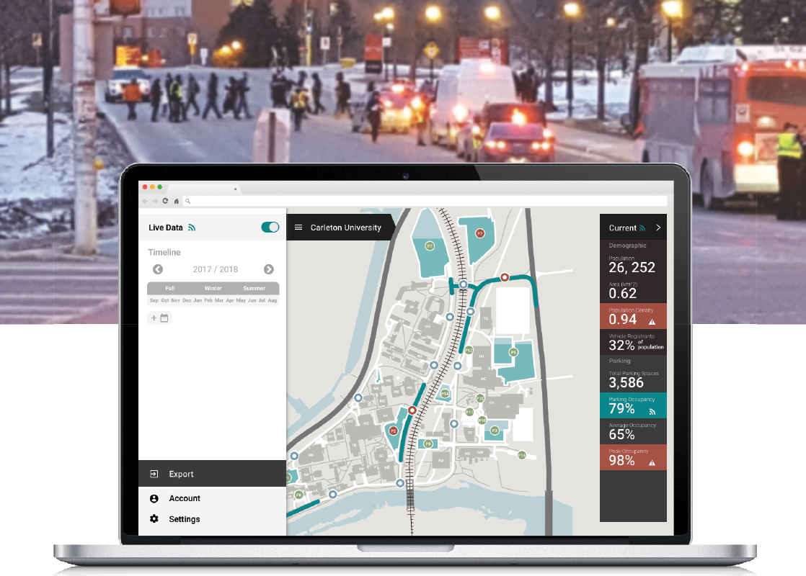
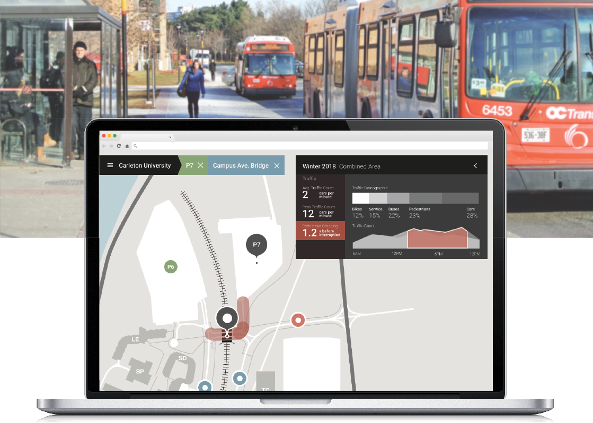

Service Design | Bachelors Honours Thesis

TIMESPACE
Parking Data Visualization Platform
(Image from Microsoft)
RESEARCH COLLABORATORS:
Kevin Wong, Carleigh Sarvosky, Simon Bontempo, Chase Mueller, Chris Frogget
PROBLEM STATEMENT:
Carleton University’s Parking Services needs better data toolsets to organize its fragmented data sources. One must scavenge for data, then interpret it to optimize parking infrastructure decisions to improve the campus parking experience.
SOLUTION:
This proposed visualization toolkit organizes data from numerous sources. It also analyzes the data to provide smart insights useful for more informed short & long term planning.
PROJECT DESCRIPTION:
The School of Industrial Design at Carleton has partnered with the campus' Parking Services Team for the 2018 honour's thesis project. A team of 6 students conducted research regarding the parking and service design experience at Carleton University. This is done through field observations, heruristic analysis, and user research.
The overarching goal is to improve the parking service experience for both the Parking Services Team as well as the end users of the service. Once gaps and opportunities within the parking ecosystem is identified as a team through mentioned research, co-design is conducted to obtain design solutions.
CONTRIBUTIONS:
- Conduct field observations, heuristic analysis, and further investigations regarding Carleton's Parking Ecosystem
- Synthesize research findings to identify stakeholders, gaps, and opportunities across the ecosystem
- Co-design with Parking Services Team for appropriate design solutions according to identified gaps
- Cooordinate with research team in ensuring a cohesive design solution across the service
- Ideation and rapid iterations in developing appropriate design solution
- Validation, and refinement of product, UI, UX, and Userflow through UR sessions
- Build Prototype with Framer.js and conduct further testing with said functional prototype
- Prepare presentation materials for exhibtion and hand-off to Parking Services Team
PHASE 1 | RESEARCH
THE CARLETON PARKING ECOSYSTEM
Stakeholders within the parking ecosystem include administration, staff, students, faculty, contractors and visitors; the parking services team works behind the scenes to improve, maintain, and uphold parking regulations on campus.
 Essentially, there are two opposite sides of stakeholders:
Essentially, there are two opposite sides of stakeholders:
- Business (Parking Services Team)
- Consumer (parking patrons)
Research findings are mapped below:


Current services offered by Parking Services (and its respective technologies) are mapped below. Areas of improvement are also identified.

Each member of the team identifies an area to focus on across the service redesign. The team continues to work together to ensure a cohesive design and deliverable across the parking service experience.
PHASE 2 | Synthesis & Ideation
OPPORTUNITY
Current data and toolsets available to Carleton Parking Services are lacking, fragmented, and unintuitive. A toolset that gathers all data sources into one place and presents it intuitively will greatly increase the Parking Services Team's workflow.
Furthermore, additional data can be collected to provide richer detail and insight for the Parking Services Team.
 Current data sources include user input and Automatic License Recognition System (ALRS). It is proposed that other data sources can append to the existing, such as video processing from security cameras and image processing from satellite images.
Current data sources include user input and Automatic License Recognition System (ALRS). It is proposed that other data sources can append to the existing, such as video processing from security cameras and image processing from satellite images.
PROJECT SCOPE
The final project deliverable will focus on the product design of the data visualization toolset.

Future design will include hardware / software design considerations for data collection point (surveillance camera) and the parking patron facing platform.
USER VALUE
The collection and visualization of data can benefit the Parking Services Team in making more informed business decisions, while the parking patrons can reap the benefits of better urban planning.
It can be useful for both short-term and long-term decisions:

TARGETED DEVELOPMENTS
Urban developments fall into a spectrum between auto-oriented developments and transit-oriented developments.
It can be concluded that Carleton is closer to the transit-oriented end of the spectrum. Thus, the campus can be considered as a miniature, transit-oriented city; or more formally: a microcosm of the outer, surrounding city. This means that its nature more closely aligns with a suburb of a city, than as its own independent city.
Definition of transit-oriented, transitioning, and auto-oriented developments, and the goals they may want to achieve with the help of the tool, TIMESPACE.
TARGETED USERS & USER FLOW
The minimum viable product (MVP) will be to focus on the needs of Carleton Campus as the client.
Primary Users | Interact with the front-end of the toolset:The general flow of the product is outlined below. The touchpoints for primary and secondary users are identified.Secondary Users | Interact with the backend of the toolset:
- CU Parking Services Personnel
- Parking Services IT
- Parking Services Technician
DATA OF VALUE
Useful data that can be collected from the data sources are mapped out. Furthermore, calculation of such data can present more meaningful findings for the users. These will be the data that will be displayed on the visualization toolset.

Test Scenario with the Identified Data from Above
‘Pinch-points’ around the campus were identified and underwent a hypothetical problem-solution fit. From that, data necessary to reach or justify that solution is deduced. This is a typical process that a decision maker might undergo. They would obtain reports or feedback of 'pinch-points', and will need to find a potential solution to present as a proposal to the Admin of Finance.
 The reverse deduced data is compared with the data mapped out in 'Data of Value'. This helps confirm the usefulness of the data identified.
The reverse deduced data is compared with the data mapped out in 'Data of Value'. This helps confirm the usefulness of the data identified.
PHASE 3 - 4 | ITERATIVE DESIGN REFINEMENT
DETAILED TASK FLOW
WIREFRAMES
 Sketches showing considerations for type of data visualizations, information hierarchy, screen real estate, and time filter toggles
Sketches showing considerations for type of data visualizations, information hierarchy, screen real estate, and time filter toggles
Further explorations of time as map visual overlay, other possible map overlays, and panels to display detailed area statistics
 Defining interactions for map vs. side statistics panel to determine amount of space each section to occupy; also brainstorming micro-interactions, ways to indicate ‘poor area health’ and supply and demand calculations
Defining interactions for map vs. side statistics panel to determine amount of space each section to occupy; also brainstorming micro-interactions, ways to indicate ‘poor area health’ and supply and demand calculations
MID-FIDELITY WIREFRAMES
Iteration 2-1
User has heard repeated reports of congestions and unsafe pedestrian crosswalks at the P7 / Campus Ave. Bridge Area. The user enters the toolset.
 The user clicks on P7 on the map, and summarized statistics for the P7 parking lot area is shown.
The user clicks on P7 on the map, and summarized statistics for the P7 parking lot area is shown.
To gather insights on the entire P7 and Bridge intersection, the user understands that he or she should create a ‘combined area layer’ to display summarized statistics for that intersection. Thus, the user selects the bridge area, and Combined Area data is shown.
USER TESTING
Premise and Intent
High level decision makers for different urban areas are recruited and a 45-minute interview session was conducted with each personnel. Details of their decision-making processes, chain of commands, case studies, access to data and toolsets, desired data and toolsets, etc were inquired. They are then walked through a mock scenario through wireframes (wireframes in iteration 2-1).
The intent to this study is to gather more information about the context of their decision- making process. Furthermore, this will test whether my hypothesized data visualizations are relevant and meaningful to their operations.
Personnel Interviewed
Carleton Parking Services Assistant Director, McMaster Parking Operations Supervisor, Urban Planner at WSP | MMM Group
Findings
It is discovered that the visualizations in the mid-fidelity mock-ups presented to the interviewees overlap with data gathered from Traffic Demand Assessments, an assessment that is the traffic industry standard. Thus, the visualization toolset at this phase would be a tool used only once every few years, as the Parking Team assesses traffic and parking trends to update their development plan.
This presents an opportunity to update the product to become a much more active tool. Should it incorporate all the data presented by my colleagues during consultation (ie. Parking payments, parking vacancies), it will become a toolset for daily use. This will drastically change the Parking Team’s user stories and habits.
There also seems to be a similarity in development plan processes between the Carleton campus and municipalities: traffic assessments and other studies are conducted every few years to update their development plans. However, as Carleton’s governing entities are much more integrated compared to cities, they have an advantage in opportunity to create more streamlined service experiences to end users. This also means that from a product development perspective, more data will be available for use at Carleton, and accessing databases for the data visualization toolset will be a smoother and less political process.
It should also be noted that this similarity proves the initial premise in the concept development phase: that Carleton can be viewed as a microcosm of a city. The candidness of this product on campus will be reflected in the context of a city.
FURTHER CONCEPT DEVELOPMENT
Iteration 3-1
 Styling options for specific data types are explored. This includes interval graphs, time filtering, and parking lot pricing
Styling options for specific data types are explored. This includes interval graphs, time filtering, and parking lot pricing
 Styling explorations for color coding, highlighting problem areas and notable interpolation; plus more data is added, and its visualization is explored
Styling explorations for color coding, highlighting problem areas and notable interpolation; plus more data is added, and its visualization is explored
HIGH FIDELITY WIREFRAMES
Iteration 3-1
Visualization toolset displays default data for the overall campus during the current, Winter 2018 term. Potential problems are highlighted in red, and traffic count interpolation is highlighted in green.
 Data for P7 Parking is displayed; problems such as high traffic and occupancy, acute winter space loss, and long waitlist is highlighted; a supply and demand chart showing suggested cost and permit quanity is shownd
Data for P7 Parking is displayed; problems such as high traffic and occupancy, acute winter space loss, and long waitlist is highlighted; a supply and demand chart showing suggested cost and permit quanity is shownd
 Data for combined area is displayed; traffic congestions are displayed and overlaid on map, as well as in graph on right; note that crossing intervals are way too short, posing danger for pedestrians.
Data for combined area is displayed; traffic congestions are displayed and overlaid on map, as well as in graph on right; note that crossing intervals are way too short, posing danger for pedestrians.
Potential Scenario for above wireframes
The user is investigating the P7 and Bridge area due to reported congestions and unsafe pedestrian crosswalks. He or she launches the visualization toolset to investigate.
Solutions are derived from the investigation. The data from the tool will also be used to support his or her proposal to Parking Service’s director, then VP of Finance and Administration for budgeting.
FURTHER CONCEPT REFINEMENT
Iteration 3-2
Exploring UI that allows users to control the timeline at which the data is referencing. Also exploring visualizations of live data on the map, including traffic and lot occupancy.
Iteration 3-3
Exploring UI to display and export data, such as live data on the numerical data panel. Also exploring how to signify the supply and demand calculator feature.
PHASE 5 | Final Concept
Use Scenarios
 Monitor Live Traffic Data on Campus
To assess urgent situations such as accidents, rush hour, or other special events. Events such as as large scale tournaments, road blockage from picketing, or residence move-in days.
Gauge Parking Needs as Campus Grows
Gauge overall parking availability and needs on campus as the campus grows. Data such as traffic interpolation, revenue from parking services, and population density. Provides invaluable data for campus development plans.
Monitor and Calculate Parking Lot Supply & Demand
Review and calculate pricing and pricing models for parking lots according demand, revenue, mortgage pay-off, parking patron demographic, and population trends. Also helps determine amount of permits released each term.
 Explore and Investigate Pinch Points on Campus
Data visualizations help personnel discover insights and potential solutions. Acquired data is essential in supporting business decisions.This is key, particularly in writing proposals for funding.
Data, either live or referencing a certain timeline, is visualized on map and panel.
Data sets can be further processed in the export screen, before publishing externally.